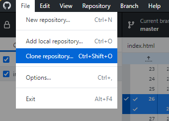
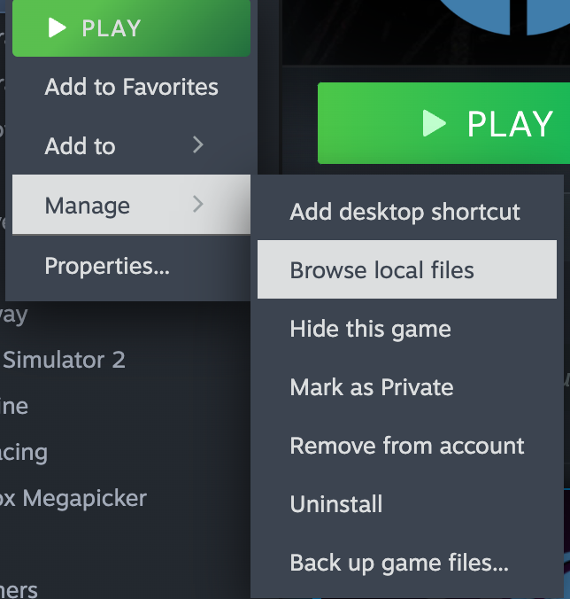

Once you have GitHub Desktop or PhoenixLink signed-in and open, you can go to the command bar, and select File > Clone repository.

Upon clicking that, you will see a screen where you can filter the repositories you have access to. This includes ones associated with your Account, and ones associated with The Phoenix Project Software.
In Steam, go to Half-Life in your Library. Assure it is installed, then right click the listing and go to Manage > Browse Local Files.

Once the explorer window has opened, click on the blank space in the path so that it turns into text. Then, copy and paste it into the path entry in GitHub Desktop. Typically, it will be something like this: C:\Program Files (x86)\Steam\steamapps\common\Half-Life\REPOSITORY-NAME. Of course, if you've consciously changed where your Steam games are installed you should know all about this. Once this is all sorted just click the Clone button and wait for the process to finish.
The clone finished! Now you need to restart Steam by going to the menu in the top-left and clicking Change Account. Click on your account once Steam restarts and the mod you just cloned will appear in your library!